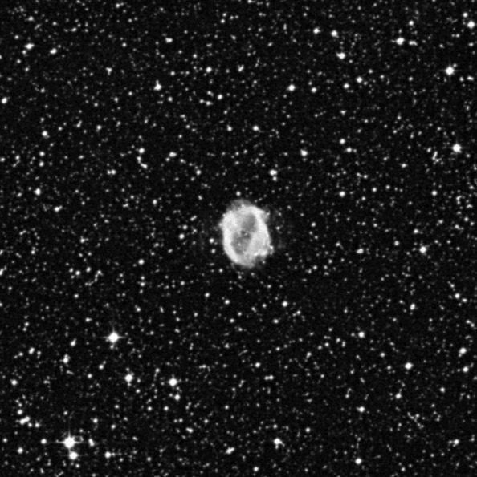
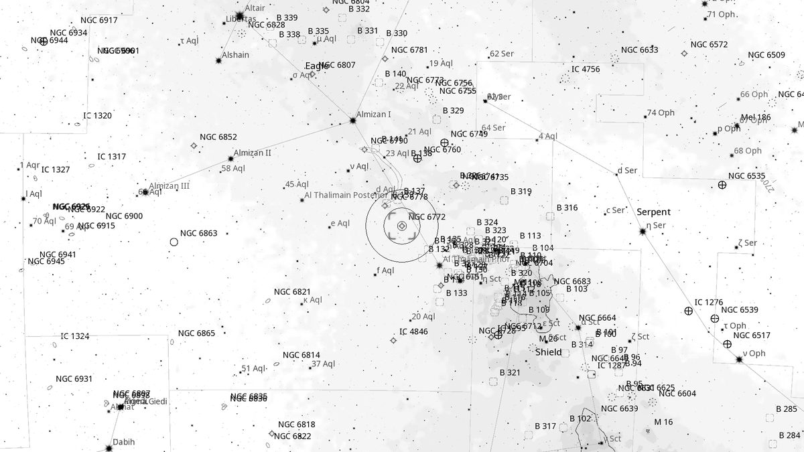
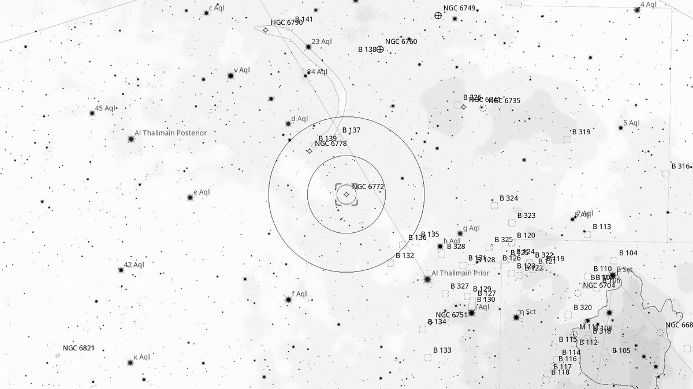
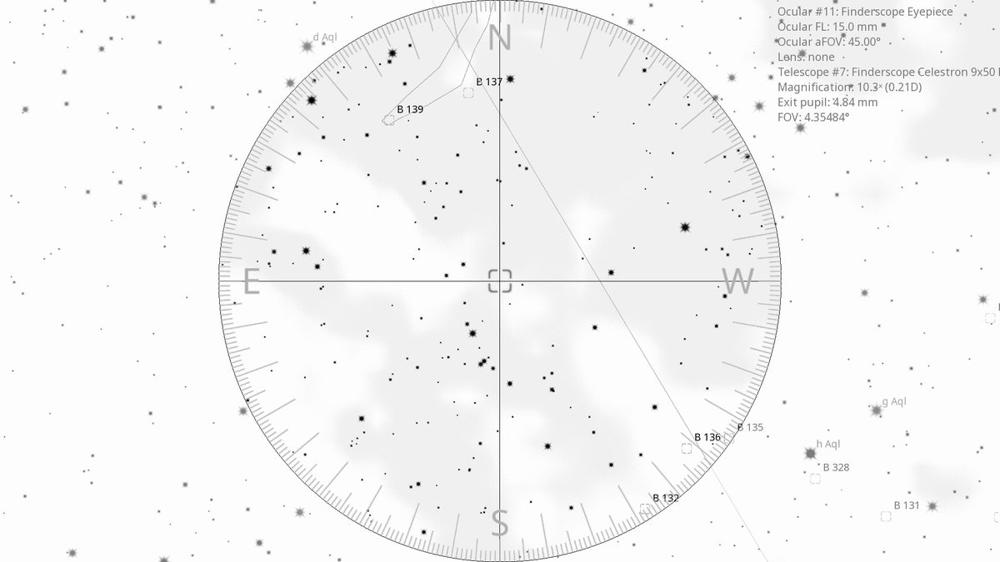
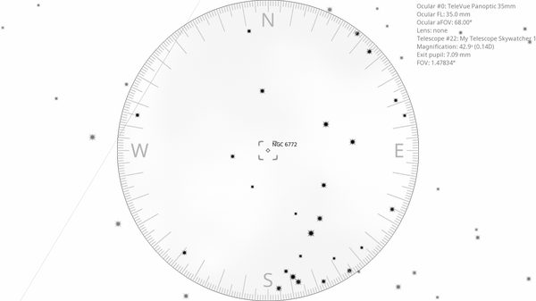

NGC 6772 (PN)
Planetary Nebula in Aquila
| R.A. | Dec. | Size | Mag | SB | Cnt.St | Type | Distance | Chart |
|---|---|---|---|---|---|---|---|---|
| 19h 14m 36.9s | -02° 42′ 30.2″ | 1.1′ | 12.7 | 12.6 | -- | PN | -- | -- |

Source: POSS-2 UK Schmidt Red (STScI) | Field: 10′ × 10′
Background
[Background — fill from astronomical references for NGC 6772.]
My Observing Notes
[Add observing notes here, dated, by aperture.]
References
Charts

Ultra-wide view (~25° field)

Wide-field view with Telrad rings (4°, 2°, 0.5°)

Finderscope view (9×50 RACI, ~4.4° TFOV)

Eyepiece view — 35 mm Panoptic on 12-inch f/5 (1.6° TFOV)